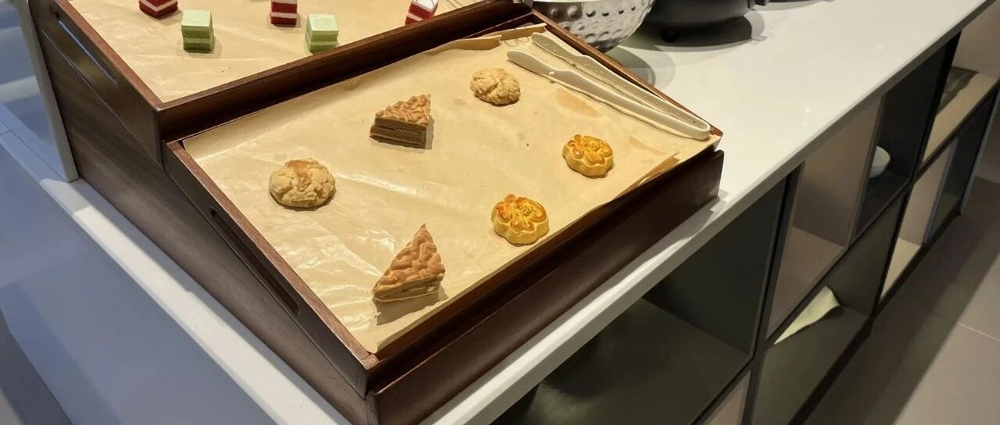

我发现出门在外，要学会吃亏~
点击关注 秋秋在分享
一起实现财务自由退休
大家好，我是秋秋呀。
今天是自驾往海南去的第五天，旅途很愉快，也发生了一些小插曲。
1.在威海旅居的房子退租，中介以没打扫干净为由，扣了300押金。
我理解的打扫干净是东西清空，物归原位，简单打扫没有垃圾。之前在北京租了7年房子一直都是这样，没啥问题。
而这里的标准是必须走的时候桌子地面厨房锃亮，自己打扫肯定达不到这个标准，要请保洁。

我们怕麻烦，最终商量出了300保洁费。
2.青岛酒店查不到早餐权益，不让同行人去吃。
我和大老王酒店都有金卡会员，这个支付宝黑卡权益就有，金卡有早餐，同行人金卡也是能一起去吃饭的。
结果这家酒店说入住人是金卡，只享受一份早餐，不让同行的金卡进去吃饭。

我们没有争执，干脆买了早餐券。
3.枣庄酒店睡觉住客噪音严重，一直闹到凌晨。
我们跟着宝宝八点多就睡，有噪音也是先忍，直到晚上11点受不了反应给前台。
前台提醒了两次，他们声音小了很多，到凌晨睡了也就没声音了。
我们反馈给酒店这两天可以换房间，避免继续住有问题。
总之，遇到问题，我会先适当退让。
尤其出门在外，不争执，不赌气，已经成了做事的第一原则。
为什么？
因为这些人，我大概率一辈子都不会遇到第二次，争输赢只会浪费我的情绪。
像第一件事第二件事，他们已经有了自己的标准和规则，想让他们去承认标准有误，不是我旅行几天就能完成的。
我的时间更宝贵，生命也值钱，面对影响我时间金钱情绪的人和事，争执没有意义。
这在心理学上叫：幸福者退让原则。
你更幸福，反而要吃点小亏。
本质上你吃了小亏，反而能将长期幸福效用最大化，这是幸福者的博弈论。
像电视剧《天道》里，主角丁元英在古城附近居住，每天早晨就拎着垃圾下楼，顺便在附近的小摊吃馄饨。
他一般都先给钱，再吃东西。
这次吃完回家，却被馄饨摊主叫住，你还没给钱呢？

丁元英一秒钟思考后，直接从兜里掏出钱又给了摊主。
很多人会想，为什么他不解释一下？为什么不掰扯清楚？
这就是丁元英的思维，一碗馄饨不如他的健康和一天的好心情重要。
我记得武汉火车站出一个事，有一个老板姓姚，生活很不容易，带着三个孩子开个面馆。
这时候来了个青年，点了最便宜的一碗面条4块钱，一看也不富裕。
结账的时候店家说5块钱，青年不乐意了，写的4块钱，店家就说涨价了！
双方争执，小伙子直接冲到厨房拿起菜刀砍了店家。

因为吃面条，一块钱的事情，就出了人命。
真的不值得。
但是退让，也不是让大家吃哑巴亏！事事忍让！
退让和忍让的本质区别在于:
我们不是出于恐惧或软弱，而是基于对幸福的珍惜才退让。
在核心利益与非原则问题前，才会退让。
比如你已经遭遇霸凌，或者你的孩子遭遇危险，肯定不会退让的。
退让，是两者相权取其轻。
如果一块钱对你不如一个小摊卖水果的阿姨重要，就不要为了讲价而费劲半天。
退让，不是你觉得自己幸福，就应该让步。而是反过来，当你察觉到与你对立的人“不幸”，为了不成为压垮对方的最后一根稻草，可以稍作退让，这属于风险规避。
幸福者退让原则最早是由心理学家Ed Diener和Martin Seligman于2002年提出。
当你拥有较高幸福感和生活满意度时，在非原则性冲突中主动选择退让，反而能维护更重要的关系价值或避免潜在风险。
神经科学研究也表明，人际冲突也会激活大脑杏仁核的威胁反应，每次你激烈争执，相当于多深度工作4小时的心理能量。
幸福者退让，本质上也是对情绪更好。
总之，出门在外，肯定有好有坏。
对于不影响我们原则的问题，小钱小事，直接过去更好～